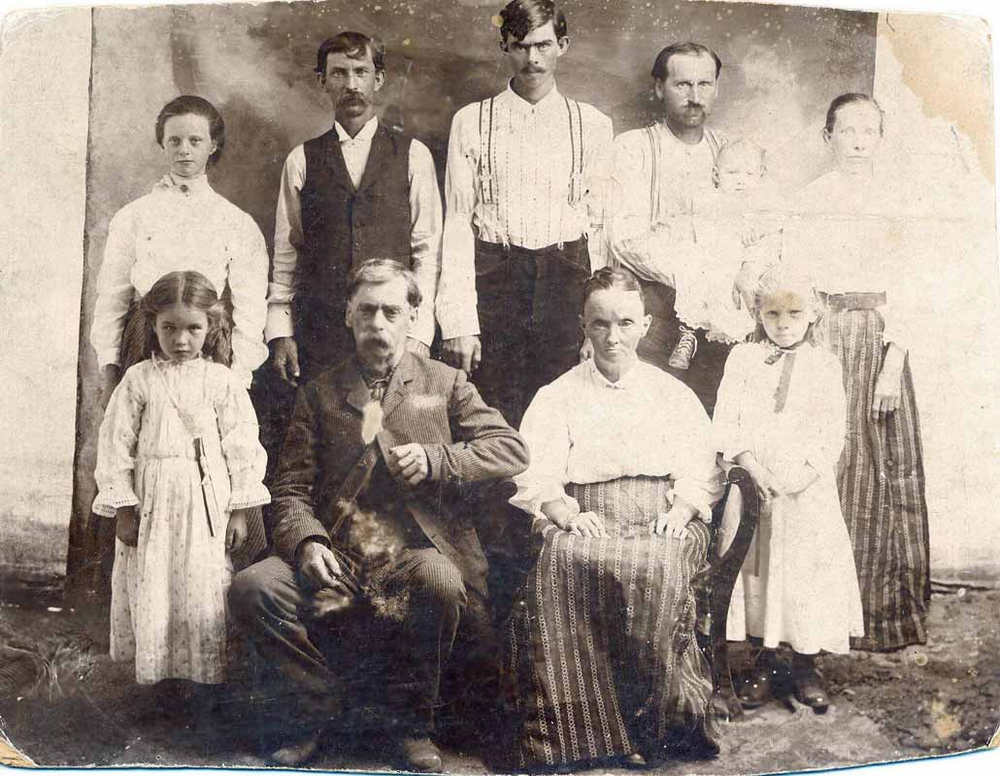
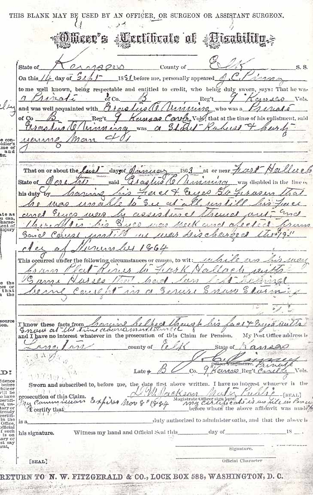
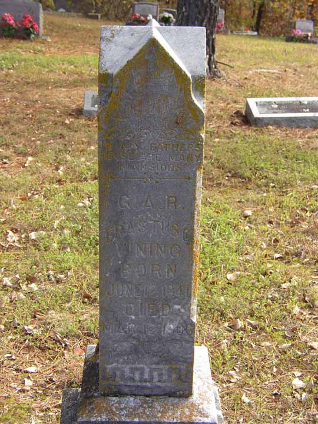

Family Data
Erastus Clarkson Vining and Elizabeth (Ritson) Vining and family:
Front row (L to R): Ica Boraker (later married [...] Fullerton), Erastus Clarkson Vining, Elizabeth (Ritson) Vining, Annie Boraker
Back row (L to R): Minnie (Boraker) Vining, Walter James Vining, Charles Augustus Vining, George Boraker, Lenna Boraker (later married [...] Stevens), Cora May (Vining) Boraker.
Erastus Clarkson and Elizabeth in the front row are husband and wife. Their three children are Cora May (married George Boraker and had the three children in the photo), Walter James (married Minnie), and Charles Augustus.

Military disability for Erastus Clarkson Vining. Grammar and spelling has been corrected in the following transcription: "... That on or about the last days of January 1863 at or near Fort Hallock, State of [...?] said Erastus C. Vining was disabled in the line of duty by having his face and eyes so frozen that he was unable to see at all until his face and eyes were by assistance thawed out, and thereafter his eyes were weak and affected from said cause until we were discharged the 19th day of November 1864. This occurred under the following circumstances or causes, to wit: while on his way from Platt River to Fort Hallock with some horses that had been left behind being caught in a sever snow storm. I know these facts from having helped thaw his face and eyes with snow at the time above mentioned and I have no interest whatever in the prosecution of the Claim for Pension."

Census Data
| 1870 | 1880 | 1890 | 1900 | |
| Erastus Clarkson Vining | 27 | 38 | ? | [57?] |
| Elizabeth E. (Ritson) Vining | 21 | 32 | ? | 51 |
| Dora May Vining | 8 months | 11 | ? | married and living in separate household |
| Walter James Vining | 8 | ? | living in separate household | |
| Edwin F. Vining | 5 | ? | [see note below] | |
| Charles Augustus Vining | 1 month | ? | 19 | |
| child Vining | [see note below] | |||
| child Vining | [see note below] |


Death Data
Gravestone for Erastus Clarkson Vining, in Evergreen Cemetery, Branson, Missouri:
